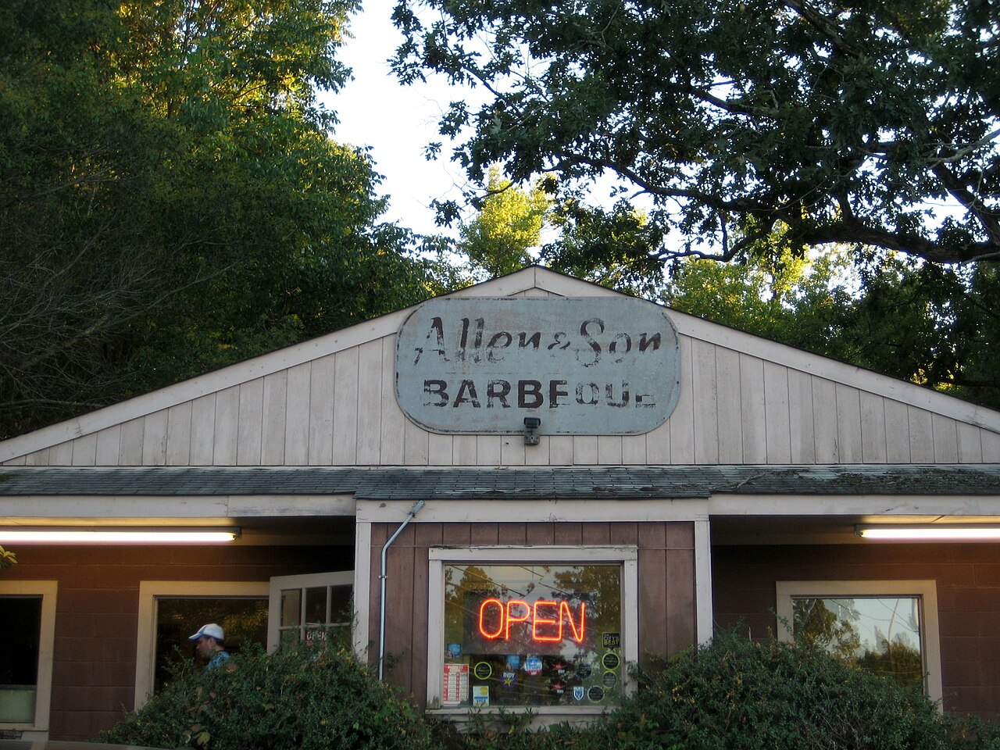

a place · NCAllen & Son Barbeque
also: Allen & Son · Allen and Son Bar-B-Que · Allen & Son Barbecue

The hickory-fired pork-shoulder restaurant on Millhouse Road at N.C. 86 north of Chapel Hill that Keith Allen opened in 1971 at nineteen and closed in the first week of December 2018, quietly, to avoid a long goodbye. Allen split the hickory himself, fired the pit every half hour for nine hours, and dressed the chopped shoulder with the hot vinegar sauce he had from his father — an eastern sauce on Piedmont meat. His wife Tammy waited tables for thirty years and made the ice cream; the pies, cobblers and banana pudding were the second reason to come. A separate Allen & Son in Pittsboro, under a licensing agreement, stayed open.
The story Cited · web-uncpress-keith-allen
Keith Allen's father James ran an Allen & Son in Chatham County, and Keith was cooking at twelve or thirteen after his father bought the business; his father died at 51 or 52. In 1971 Keith opened the Chapel Hill restaurant with $3,000, Our State reported in 2017. He started work at 2:30 in the morning five days a week, split hickory logs by hand for the heat and the flavor — 'I keep cooking with wood because I'm chasing that flavor' — and cooked sixteen-pound shoulders down to nine or eleven over nine hours. 'Nobody's hands but mine touch my barbecue, until the customer's do.' The authors of Holy Smoke interviewed him at length; the Southern Foodways Alliance gave him its Guardian of the Tradition award in 2007. He had no son to take it on; his daughter went to graduate school in geospatial science. In early December 2018 he closed without notice, and Chapelboro reported on December 6 that the Pittsboro Allen & Son on U.S. 15-501 would continue under a separate licensing agreement. UNC Press published a closing interview with him two weeks later.
How it is done Cited · web-uncpress-keith-allen
Sixteen-pound shoulders over hickory Allen split himself, the pit fired every thirty minutes for nine hours, the meat chopped and dressed with a vinegar sauce he called hot and spicy. Chicken, catfish and cheeseburgers filled out the menu, and the desserts — ice cream made daily, cobblers from his grandmother's recipe, coconut chess and peanut butter pies, pecan pie, banana pudding — were made in the house, with sweet tea.
Today Cited · web-chapelboro-allen-son
Closed since December 2018. The building at 6203 Millhouse Road, Chapel Hill, is not the Pittsboro Allen & Son, which continued separately; this record is the Chapel Hill restaurant only.
Facts
| state | NC |
|---|---|
| status | closed |
| founded | 1971 |
| fuel | wood |
| styles | Lexington-style barbecue, Eastern North Carolina barbecue |
| region | The North Carolina Piedmont |
| address | 6203 Millhouse Rd, Chapel Hill, NC, 27516 · Orange County Cited · web-ourstate-allen-son |
| where | 35.9919, -79.0717 (street) · OpenStreetMap · open in maps Harvested · osm |
| links | Interview with Keith Allen on the occasion of its closing — UNC Press Blog (2018) · Allen & Son in Chapel Hill — Our State (2017) |
| confidence | high · updated 2026-09-16 |
Near here
Straight-line miles, so the road will be longer. The finder sorts every pit in both states from where you are.
- 11.8 mi — Backyard BBQ Pit Durham ✊🏾 Black-owned 🔥 Cooks over wood 👪 Family-run
- 22.7 mi — Hursey's Bar-B-Q Burlington 🔥 Cooks over wood 👪 Family-run
- 28.2 mi — The Fiction Kitchen Raleigh 🏳️🌈 LGBTQ+ welcoming ♀ Woman-owned
- 28.4 mi — Clyde Cooper's BBQ Raleigh ♀ Woman-owned
- 33.3 mi — Stephenson's Bar-B-Q Willow Spring 🔥 Cooks over wood 👪 Family-run
Its kin
Pages that point here
Pictures
{kind=link}
{kind=link}
Sources
- Interview with Keith Allen, owner of Allen & Son Barbecue Restaurant in Chapel Hill, on the occasion of its closing — UNC Press Blog (19 Dec 2018) · link
- Allen & Son in Chapel Hill — Our State (Jason Zengerle, 6 Aug 2017) · link
- Famed Allen & Son Barbecue Closes in Chapel Hill — Chapelboro (6 Dec 2018) · link
- Holy Smoke: The Big Book of North Carolina Barbecue — John Shelton Reed, Dale Volberg Reed, with William McKinney, 2008 · link
- NC Historic Barbecue Trail · link
Provenance marks: Cited a named source, linked · Harvested fetched from an open dataset · Tradition general knowledge of the tradition, hedged · Inference this project's reasoning · Field someone stood there. This record as JSON.